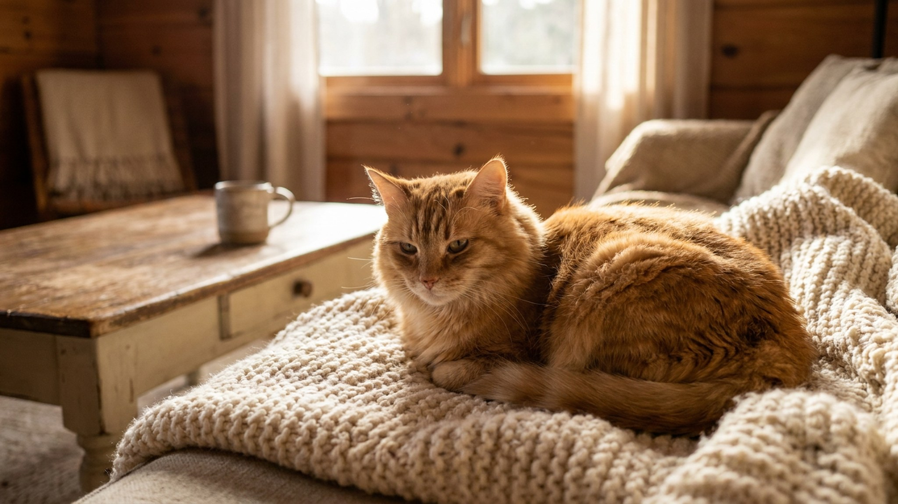

Хозяин ушёл на работу, лайка осталась одна — через два часа разобрана диванная подушка и прокопан плинтус. Это не вредность: западносибирская лайка создавалась для многочасовой самостоятельной работы в тайге, и городская квартира этот инстинкт не отключает. Ниже — сколько движения и занятости нужно этой породе реально, как устроена её шерсть и кому она подойдёт.
🐾 Ваш питомец — западносибирская лайка?
Заведите профиль в AnimaLife: приложение запомнит породу, возраст и вес и будет подсказывать по уходу именно для неё. Вопросы AI-ветеринару — круглосуточно и бесплатно.
Завести профиль → Завести в MAX →
У вас iPhone? AnimaLife есть в App Store
Западносибирская лайка — охотничья порода, выведенная из нескольких аборигенных лаек Западной Сибири и официально признанная в СССР в 1947 году. Это не ездовая и не пастушья — это именно охотничья собака, которую брали на белку, соболя, лося, медведя. Она работает в паре с охотником, но действует самостоятельно: уходит, находит, удерживает зверя лаем и ждёт хозяина.
Отсюда ключевые черты характера: высокая самостоятельность, сильный охотничий и следовой инстинкт, территориальность. Западносибирская лайка — не якутская (та ездовая и более компанейская), не восточносибирская (та крупнее и флегматичнее). Это рабочий охотник с независимой головой.
Это порода высокой энергии — без исключений. Реальный минимум для городского содержания:
Короткий выгул «на поводке 30 минут утром и вечером» для этой породы — не норма. Недогулянная западносибирская лайка сама придумывает себе занятость, и обычно это дорого обходится квартире.
Лайка не «зеркало» хозяина — она принимает решения самостоятельно. Это хорошо на охоте и неудобно в городе: убегает за запахом, игнорирует отзыв, если нашла что-то интересное. Отпускать без поводка на незнакомой территории не стоит.
При этом порода хорошо обучаема, если занятия начаты рано и последовательны. Жёсткие методы не работают — лайка закроется. Работает последовательность, поощрение и понятные правила с первого дня.
У западносибирской лайки двойная шерсть: жёсткая ость и густой подшёрсток. Линяет обильно дважды в год, иногда слабо линяет круглогодично в тёплых квартирах.
Западносибирская лайка — выбор для активного владельца, который много проводит времени на улице: охота, каникросс, походы, загородная жизнь. В таких условиях это надёжная, выносливая и преданная собака.
В квартире в центре города, у занятого человека без возможности долгих прогулок — порода будет страдать, и жить с этим будет тяжело обоим. Перед тем как взять лайку, честно оцените свой ритм жизни. Вопросы по уходу и наблюдению за здоровьем обсуждайте со своим ветеринаром.
🐾 У вас западносибирская лайка?
AnimaLife соберёт уход под породу: к каким болезням есть склонность, что проверять по возрасту, чем кормить и когда пора к врачу. Бесплатно, прямо в мессенджере.
Собрать план ухода → Собрать в MAX →
У вас iPhone? AnimaLife есть в App Store
🐾 Понравился разбор?
Подпишитесь на канал — каждый день разбираем по одному тревожному симптому у кошек и собак: что в пределах нормы, а когда пора к врачу. Подпишитесь, чтобы не пропустить разбор, который может спасти здоровье вашего питомца.
Материал носит информационный характер и не заменяет очную консультацию ветеринара.